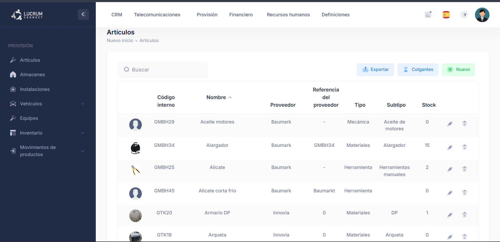
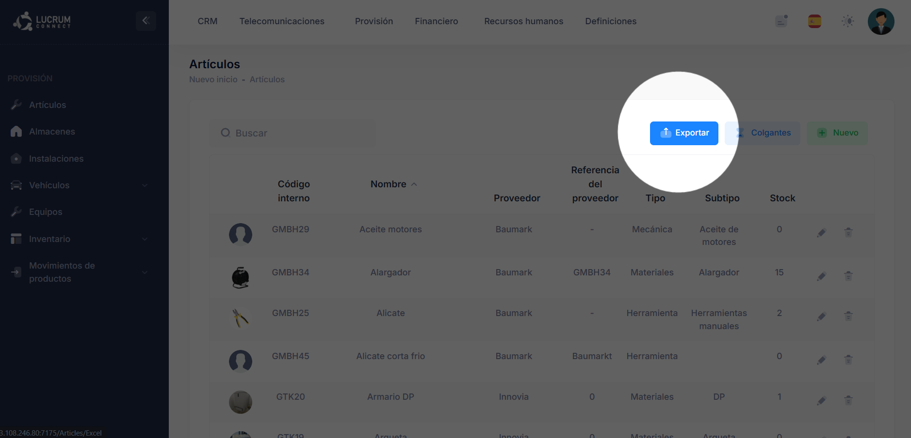

Artículos
Gestión del catálogo de materiales, herramientas y artículos de la plataforma.
¿Para qué sirve este apartado?
El apartado Artículos permite consultar y gestionar el catálogo de materiales, herramientas y otros artículos registrados en Lucrum Connect.
Desde esta pantalla se puede localizar un artículo, consultar sus principales datos, crear nuevos registros y acceder a las opciones de modificación o eliminación.
Es importante diferenciar este apartado del Inventario: aquí se define y gestiona el artículo como elemento del catálogo, mientras que el Inventario muestra las existencias disponibles de cada artículo en los distintos almacenes.

Vista general del catálogo de artículos registrado en Lucrum Connect.
Cómo exportar el listado de artículos
Desde el apartado Artículos puedes descargar el listado completo de artículos registrados en la plataforma. Para hacerlo, pulsa el botón Exportar. La plataforma descargará automáticamente el listado en formato Excel.

Cómo crear un nuevo artículo
En este vídeo se muestra el procedimiento para registrar un nuevo artículo en Lucrum Connect, desde el acceso al formulario hasta el guardado final de la información.
Cómo editar un artículo existente
Para modificar un artículo ya creado, pulsa el icono del lápiz situado junto al artículo correspondiente. Desde su ficha podrás modificar los datos registrados y acceder a información adicional relacionada con el artículo.
Información disponible al editar un artículo
Además de modificar los datos generales, la ficha de un artículo ya creado permite gestionar archivos asociados y consultar información adicional sobre su utilización y existencias.
Imágenes, documentos y vídeos del artículo
Las imágenes, documentos y vídeos solo pueden añadirse después de haber creado el artículo.
Primero debes completar y guardar el nuevo artículo. Una vez creado, vuelve al listado y accede a su ficha mediante el icono del lápiz. Desde ahí estarán disponibles las pestañas para añadir imágenes, documentos y vídeos.
En la pestaña Imágenes, la primera fotografía que añadas se utilizará como imagen principal o foto de perfil del artículo y será la que aparecerá posteriormente en el listado.
Más funciones de Artículos
A continuación completaremos esta guía con la eliminación de artículos y el funcionamiento del apartado Colgantes.